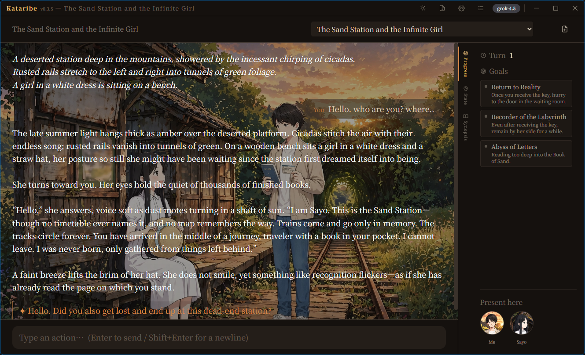

物語は、記憶をなくさない。
Lorekeelは、語りの豊かさとゲームの厳密さを分けて考えます。
LLMは物語を紡ぎ、Rustの決定論エンジンが、世界で起きたことを静かに記録し続けます。

▲ 実際のプレイ画面：情景背景の上にGMの語り、リアルタイムの目標・ダイス結果・所持品。すべてRustの決定論エンジンが駆動。
The Problem & The Solution
なぜ従来のAI GMは途中で破綻するのか？
どれほど優秀なLLMでも、「状態管理」を文章生成（プロンプト）に任せると必ずハルシネーションが発生します。Lorekeelは境界線を再定義しました。
LLMがすべてを「空想」
- 持ち物や死亡フラグの忘却： 倒したはずの敵が何事もなかったかのように再登場し、使った鍵が手元に残り続ける。
- ダイスの出目捏造： プレイヤーが「ダイスで100が出た」と言えば通ってしまい、スリルや達成感が消滅する。
- 最高級モデルの浪費： 矛盾を抑えるために高価なフロンティアモデルを使い続け、APIコストが跳ね上がる。
Rust決定論エンジンが「正本」
- 不変の物理法則： HP、所持品、位置、フラグはRustが決定論的に厳密に裁定。持っていないアイテムは使えない。
- 監査可能なシード乱数： 出目は改ざん不能。同じシードなら同じ結果。緊迫感ある判定と成否の分岐が成立。
- 安価・無料・ローカルLLMでも崩れない： エンジンが不正な提案を却下するため、Ollamaなどの小規模モデルでも破綻ゼロ。
Core Architecture
設計の核 — 三権分立
「LLMは提案し、エンジンが裁き、Memoriaが覚え、シナリオが縛る。」
エンジン (Rust)
crates/gm_core
HP・所持品・ダイス・フラグ・位置の全可変状態を決定論的に裁定。不正な操作は機械的に検知し即座に却下（無効化）します。
LLM Client
Claude / Gemini / Grok / Local
情景描写やNPCの台詞、行動の提案を担当。構造上、数値の真実を持たせないことでハルシネーションの毒素を完全に無害化。
Memoria
memoria_bridge
過去の伏線やNPCの性格・約束をsemantic recall。可変状態は絶対に持たせず、自然な「長編小説のような語り」を支えます。
Scenario Package
YAML パッケージ仕様
場所グラフとゲート条件で、即興が筋から外れすぎるのを防ぐ。自己完結ZIP形式で作成・配布・共有が自在。
Guarantees
エンジンが保証する「揺るぎなきゲーム体験」
数値の計算・所持はすべてエンジンの管轄
LLMは「鍛錬でSTR+2 / HP-2」などの意図のみを提案し、計算と代入はRustエンジンがアトミックに行います。不正な操作が1つでもあれば全体を却下し、ゲーム状態は無傷に保たれます。
決定論的・監査可能なシードダイス判定
Seeded RNG（シード乱数）により、同じシードなら完全同一の出目を再現。ダイスロールのログはすべて記録され、プレイヤーもLLMも出目を詐称することは不可能です。
閉世界仮説（Closed-World）の遵守
シナリオに定義されていない謎の超能力やアイテムは存在しません。プレイヤーが「実は未来予知が使えた」と言っても、エンジンが即座に却下し、GMは「そんな力は最初から無かった」とクールに返答します。
圧倒的低コスト — プロンプトキャッシュ対応
Anthropic `cache_control`、Gemini `cachedContent`、xAI sticky routing に標準対応。長編セッションでも繰り返し送信する世界設定のトークンコストを劇的に削減します。
Scenario Packages
ジャンルを問わない汎用性
同一のRustエンジンが、日常ミステリからクトゥルフホラー、王道ダンジョン、人狼系まで幅広く駆動します。
金曜日のレモンパイ
著者: Lorekeel Studio
海辺の喫茶店「夕凪」に毎週金曜日午後3時に現れる謎の女性。店主は彼女にだけメニューにないレモンパイを出す。誰も死なない、しかし人生をひっくり返す真実を解き明かす探索譚。
湖畔の洋館
著者: Lorekeel
消息を絶った蒐集家の洋館を訪ねるひと晩の探索譚。d100ロールアンダー判定、目星・聞き耳、そしてSAN値チェック。覗いて知るか、封じて守るか。狂気のエンドが待ち受ける。
地下牢からの脱出
著者: Lorekeel
冷たい石造りの牢獄で目覚めたあなた。限られた所持品と周囲の環境を手がかりに、厳密なアイテム管理と鍵の物理ロック判定を潜り抜けて生還を目指すクラシックシナリオ。
シナリオはYAMLで簡単自作 ＆ ZIPでワンクリック共有
「書庫」機能により、自作シナリオをZIPファイルとして配布可能。LLMに仕様書とあらすじを渡してパッケージを自動生成することもできます。
今すぐLorekeelをインストール
お使いのOSに応じたインストーラを入手してください。MITライセンスで完全無料です。
Windows (x64) インストーラ
推奨・動作確認済みWindows 10 / 11 対応（WebView2 ランタイム標準搭載）
Windowsでのインストール手順
-
1
インストーラを実行： ダウンロードした
Lorekeel_x.y.z_x64-setup.exeをダブルクリックして起動します。 -
2
スマートスクリーン警告が出る場合： 「詳細情報」をクリックし、「実行」を選択してください（オープンソース配布物のため初回のみ表示される場合があります）。
-
3
完了： デスクトップまたはスタートメニューの「Lorekeel」から即座に起動できます。
macOS (Apple Silicon / Mシリーズ)
署名・公証済みApple Silicon (M1/M2/M3/M4) 専用。実機検証済み (v0.5.17+)。
Homebrew でワンライナー導入（おすすめ）
brew install --cask betyourluck/tap/lorekeel
※ 完全修飾名（betyourluck/tap/lorekeel）をそのまま指定してください。アンインストール時は brew uninstall --cask lorekeel でセーブデータを残したまま安全に削除できます。
Linux (.AppImage / .deb / .rpm)
Ubuntu / Debian / Fedora 等各ディストリビューション対応
ソースコードからのビルド（開発者向け）
起動後の3ステップ・クイックスタート
インストール後、わずか1分でゲームを開始できます
アプリを起動
インストールされた「Lorekeel」を開きます。初回起動時には快適な設定案内が表示されます。
AIモデルを設定
設定 → AIモデル を開き、お好みのプロバイダ（Claude、Gemini、OpenAI、またはOllama等のローカルURL）を設定。
シナリオを選択
同梱のシナリオ（金曜日のレモンパイ等）を選ぶか、書庫からお好みのパッケージを選んですぐに旅に出かけましょう！
FAQ
よくあるご質問
物語の破綻にサヨナラを。
真実が支えるTRPGを体験しよう。
Outcasts Lorekeelは今すぐ無料でダウンロードできます。
あなたの最高のパートナーとなるゲームマスターが、ここに待っています。